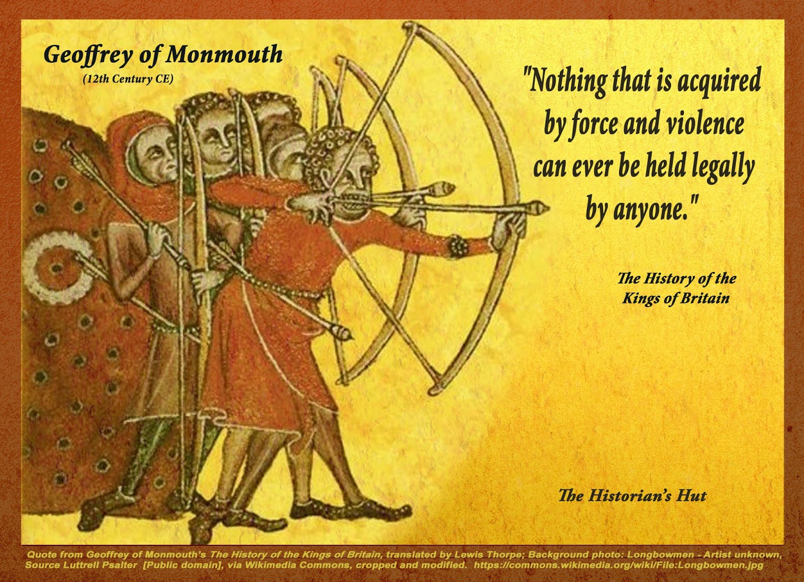
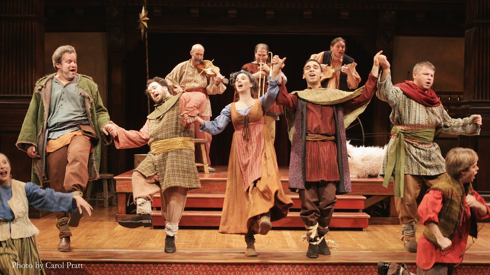

Click on the images to see notes
Caedmon's Hymn
Exeter book riddles
The Wanderer
Deor
Wulf and Eadwacer
Dream of the Rood
Judith
The Battle of Maldon (1)
The Battle of Maldon (2)
Geoffrey of Monmouth

The Mabinogi
Marie the France - Lanval
Ancrene Wisse
![I personally found reading this text about anchorites to be so interesting. The reason for this is is because I notice similarities to other religions as every religion seems to have their own take on 'isolation brings you closer to god'. For example in Buddhism, Buddha maditated for 49 days to reach enlightment. So reading about how these anchorites isolated themselves for the remainder of their lives makes me think about why many religions think that isolation from people brings them closer to god](images/anchorites.webp)
Sir Orfeo
Sir Gawain and the Green Knight (1)
Sir Gawain and the Green Knight (2)
Sir Gawain and the Green Knight (3)
Canterbury Tales (1)
Canterbury Tales (2)

Canterbury Tales (3)
A Revelation of Love
![I found this review by The Guardian about a translated text that was published in 2015 to be interesting: https://www.theguardian.com/books/2015/may/05/revelations-of-divine-love-julian-of-norwich-review-religious-visions The thing I found to me most interesting about this is that the author of the article states that ' the original Middle English is not that difficult and it has a beauty that a modern idiom can’t fully reproduce' which I happen to agree with. While it is difficult to at first read the middle english it does have a greater sense of authenticity than reading it in translation.](images/julian.webp)
The book of Margery Kempe (1)
The book of Margery Kempe (2)
Second Shepherd's Play (1)

Second Shepherd's Play (2)
Noah's Flood
York Crucifixion
Mankind

Final Entry
![Finally near the end of the class. I'm glad I ended up taking this class as I have always been fascinated with medieval texts (courtesy of growing up watching a lot of BBC shows like Merlin and Horrible Histories) and originally wanted to pursue an English degree. When I first started this class, I wasn't quite sure what types of texts we were going to read, but I liked the selection of different texts and it really showed me the variety of stories that people back then could write. From romantic stories in the lai romance genre like Lanval to stories of adventure like Sir Gawain and the Green Knight. There were ones that were unexpectedly funny too like The Miller's Tale and The Second Shepard's Play.
So if I were to say what this class was about and what I learnt, I would say it would be about discovering that there is variety when it comes to stories and how people lived in time periods that you wouldn’t think of and to not make assumptions (never would I think that there would be such a unique as a person as Margery Kempe that could exist in such times). In addition, I also saw how everythng we read is connected, from conventions of the lai genre (such as the Once Upon a Time opening, takes place in Spring, adventurous, black and white morality) to how works influenced each other as well like how both Julian of Norwich and Margery Kempe knew each other and both had visions. I learnt a lot of middle english and some latin words (such as osculare fundamentum = kiss my ass which I shall be saving for use at a later date) as well as realising that I find Latin as a language to be really interesting to learn. I started learning it on Duolingo because I was fascinated at how many words are derived from Latin (and I guess it would also be cool to say that I know Latin).](images/final.png)